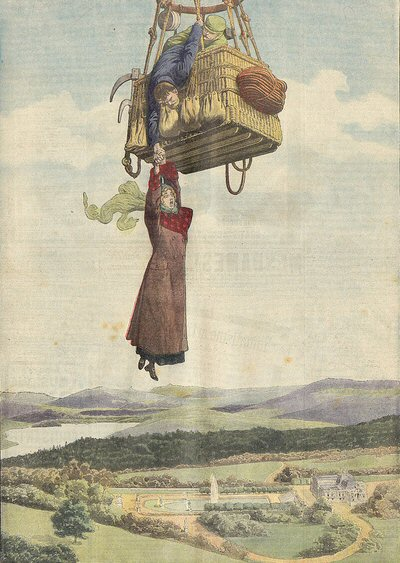

Friday, August the 6th, 2010
back to: title, date or indexes
She was a plucky tot, a heroic infant, and a little fascist… but was Tiny Enid also a feminist pioneer? On the face of it, the answer to that question seems self-evident. How else would one describe the club-footed young gal, pootling about in her clapped-out jalopy, puffing away at cheroots, essaying deeds of matchless valour, and giving a variety of malefactors a good kicking? Yet such were the constraints imposed by society on what was deemed seemly, Tiny Enid oftbetimes made great pretence of being a helpless weedy flibbertigibbety waif, ready to swoon away or throw a fit of the vapours. Sometimes she put on such a show even while performing one of her brave deeds. In this picture, for example, it looks as if Tiny Enid is about to topple from a hot air balloon basket, and is being saved by a pair of tender-hearted ruffians. She is, of course, acting out the part expected of her in a patriarchal culture. What is actually happening here is that Tiny Enid is cleverly distracting the ruffians—card-carrying members of the Communist Party, no less!—for, moments after the sketch was completed, she was back in the basket, her big black boot stamping on the neck of one ruffian while the other flung himself overboard in a cowardly escape from the tot's righteous wrath.

Picture courtesy of Agence Eureka